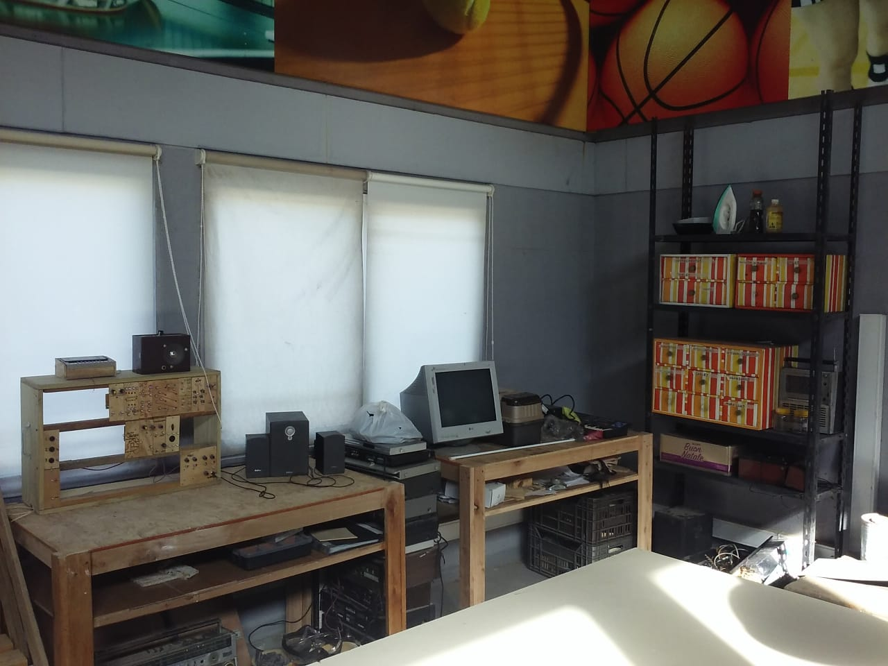
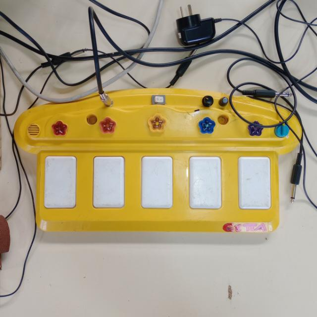

El taller

En el taller laboratorio de música electrónica se compone, interpreta y experimenta y también se construyen y/o modifican instrumentos musicales. El taller funciona en en Casa Caracol desde el 2020 (en ese entonces se llamaba taller de luthería electrónica) como un experimento en el cual se construían pequeños teclados hechos con pulsadores y un 555. Luego nos fuimos embarcando en distintos proyectos, como la construccion de un sintetizador modular CMOS (o Lunetta ) A partir del 2025 comenzamos a explorar con la modificacion de instrumentos/juguetes (o circuit bending)
Instrumentos
El "Getta" (Bautizado asi por Samuel ) es un teclado de juguete modificado para tener salida de audio, fuente de alimentacion externa y un control de afinacion.

Circuitos
Recursos pedagógicos y técnicos que utilizamos en el taller y que se complementan con la practica musical.
Cazando búfalos en el norte
Cazando búfalos en el norte funciona como una "foto" de los ensayos e improvisaciones del taller.